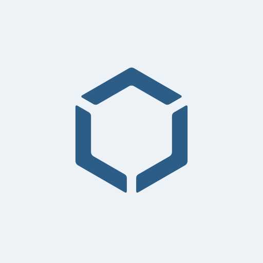
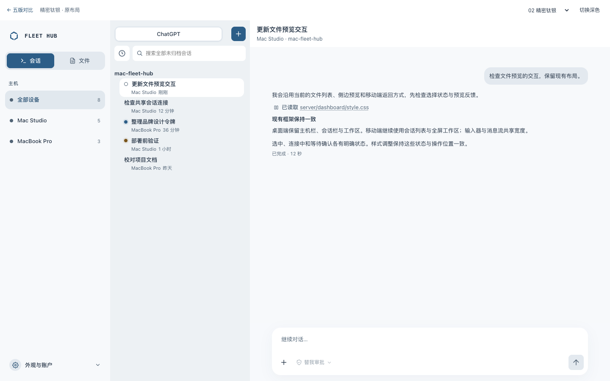
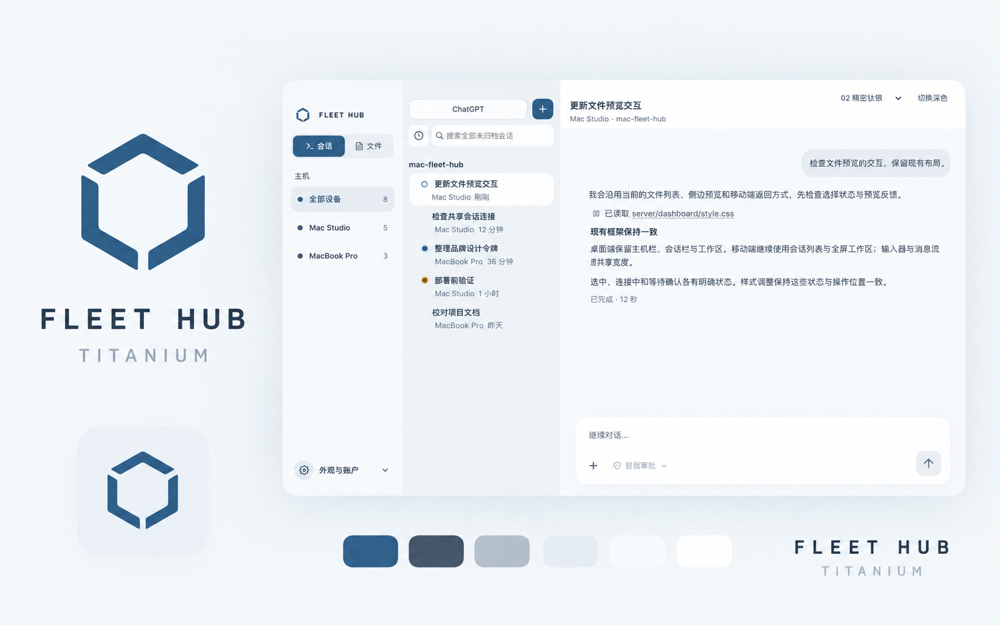

小按钮与搜索框共用 8px；手机触控尺寸提升至 44px / R12。
精密钛银
精细切面 · 浅钛银 · 无边框表面
TITANIUM / FLEET HUB
fleet hub
三个等厚折面以 120° 旋转围合空心六角；均匀断口与微圆角，让结构更轻、更精确。
APP ICON

标识
三个等厚折面以 120° 旋转围合空心六角；均匀断口与微圆角，让结构更轻、更精确。
字标
窄间距大写字标与等宽细节；冷静、精确。
材质
浅钛银、瓷白与钢蓝。层次来自色差、留白与轻阴影。
色彩与界面
保留现有三栏 / 组件位置 / 信息密度
字体与操作
清晰，有序。
正文使用项目系统字体，字号、间距与交互框架沿用原实现。
标记适配
等厚折面、等宽断口、微圆角。相同几何支持明暗与单色。
圆角与表面
同尺寸，同圆角。填色元素不描边。
同高按钮、输入框、选择器与列表操作共用 12px。
内容卡片无描边
内容卡片 16px；弹层、输入器及大容器 20px。
用表面建立层次
页面浅灰、导航瓷白、卡片纯白、交互钢蓝。选中使用色块与字重；键盘操作时出现焦点指示。
品牌总览
风格展示 · 精确来源为 SVG / 色彩令牌